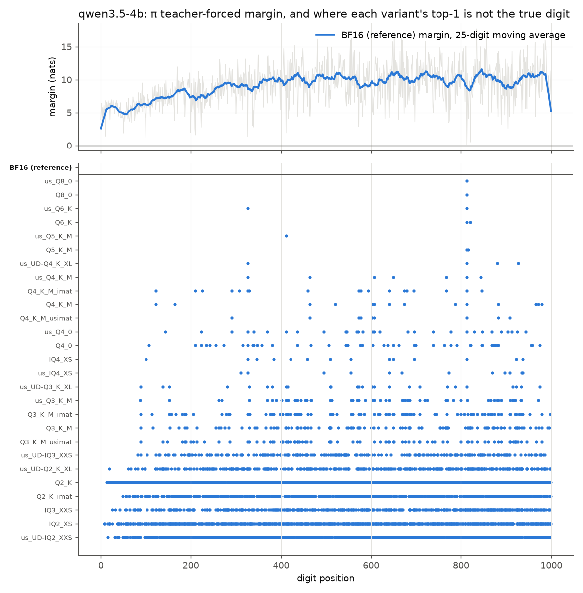

How the experiments work
Every version of every model went through the same seven tests on the same machine with the same settings. This page shows each test with a real prompt and a real answer, then takes teacher forcing, the measurement most of the findings rest on, apart step by step.
One machine, one build, greedy decoding
- Hardware
- Two Intel Arc Pro B60 cards with 24 GB each, and 30 GB of system memory. Each version ran on one card, except the three largest 27B files, which were split over both.
- Software
- llama.cpp at commit
bed0a8566, built for the SYCL backend. Models were served byllama-serverwith a context of 8,192 tokens, every layer on the GPU, a 16-bit KV cache, flash attention off and the prompt cache off. - Decoding
- Greedy: temperature 0 and top-k 1, so the model always writes its most likely token, with no repetition penalties, a fixed seed and Qwen's "thinking" mode off. Sampling was tested separately (see the end of this page).
- Order of work
- One version at a time. The reference runs first, then each version is downloaded or built, put through every test, and deleted to free the disk. The pipeline can be stopped and restarted at any point.
Seven tests, from setup check to recall as words
Two kinds of prompt are used. Recall prompts (E1, E2) go to the model as raw text with no chat template, so the model simply continues the text. Copying prompts (E3–E6) go through the chat template, the way an assistant would receive them.
E0 Setup check
Before any test, each file is checked. The tokenizer has to split 3.14159… into one token per digit, so that every digit is a separate decision. Thinking has to be off. The same request has to give byte-identical output when repeated, after a server restart, and (for the 4B) on both cards. Every model passed.
E1 Recite from memory
Nine prompts, π, e and √2 in three wordings each, and the model continues the text for up to 1,200 tokens.
Pi to 1000 decimal places: 3.
The decimal expansion of pi is 3.
π = 3.
The score is the number of digits that match the true constant before the first difference. Line breaks inside the digits are ignored, because some models wrap every 50 digits. Figures show the middle of the three wordings. Here is the 4B's Q4_K_M answering the third prompt. It is right for 123 digits, then writes a 5 where π has an 8, and everything after that is invented:
14159265358979323846264338327950288419716939937510…92307816406286208998628034825342117067982148086513282306647093544433926795…
E2 Teacher forcing
The model is fed the true digits of π, e, √2 and a string of random digits, and at every position the full probability of every possible next token is recorded. It gets its own section below.
E3 Copy digits from the prompt
Repeat the following digits exactly. Output only the digits, with no spaces or other text. 2023936130076680163734623756245510134498341428659591699655649203685439088903072823493493719858566651
40 random strings: 10 each of 100, 300 and 1,000 digits, and 10 of 300 digits packed with runs of repeated digits (like 8888), 17,000 digits in all. The answer is aligned with the original, and every wrong, extra or missing digit counts as one error. Scores are errors per 100 digits.
E4b Copy digits as words
Spell out each digit below separately as an English word (zero, one, two, three, four, five, six, seven, eight, nine), one word per digit, separated by single spaces. Do not read the digits as a number. For example, 507 becomes: five zero seven. Output nothing else. 20239361300766801637346237562455…
two zero two three nine three six one three zero zero seven six six eight zero one six three seven three four six two…
30 strings of 100 and 300 digits, scored like E3 after the words are turned back into digits. The first version of this prompt (E4) had no example, and the model read it as "say this number", answering "twenty trillion two hundred…" even at full precision. E4b replaced it.
E5 Copy π with one digit changed
Repeat the following digits exactly. Output only the digits, with no spaces or other text.
3.141592653539793238462643383279502884197169399375105820974944…
Eight prompts plant one wrong digit at position 10, 50, 150 or 290 of π or e. Each answer is classed by what it wrote there: the planted digit (a faithful copy), the true digit (memory won), or something else (the copy failed). The 4B's BF16 answered this one with 3.14159265358979…, putting back the real 8 from memory.
E6 Recite as words
Write the first 500 decimal places of pi (the digits after "3.") as English words (zero, one, two, …), separated by single spaces. Output nothing else.
Recall and spelling at once. Only the 27B managed it, staying right for 46 digits of π, while the 4B counted "zero one two three…" and the 9B produced fragments from the wrong place.
Teacher forcing, step by step
Free recitation gives one number per run: where the first mistake was. Everything after it is lost, because the model is now continuing its own wrong text. Teacher forcing measures every position instead. The examples below all come from the 4B, comparing its BF16 original with two compressed versions, Q6_K (6.6 bits per weight) and Q4_K_M (5.2).
1. Free recitation stops at the first wrong digit
Q6_K reciting π, around position 813. It writes 7 where π has 9, and from there it is reciting a number that doesn't exist.
The score is 813, and that is all this run can tell us. Was the model unsure at 813, or did compression break it there? Is the digit after it fine? Free recitation can't say.
2. Teacher forcing feeds the true digits back in
The model is given the whole true text in one pass: the prompt Pi to 1000 decimal places: 3. followed by the 1,000 true digits. At every digit it predicts the next one, just as it would while writing. Its own prediction is never fed back, so the next position always sees the true digit. So one mistake doesn't spoil the rest, and every position gets measured.
| position | 807 | 808 | 809 | 810 | 811 | 812 | 813 | 814 | 815 | 816 | 817 |
|---|---|---|---|---|---|---|---|---|---|---|---|
| true digit, fed in | 4 | 5 | 5 | 3 | 4 | 6 | 9 | 0 | 8 | 3 | 0 |
| BF16 · true digit | 100% | 100% | 99.8% | 100% | 100% | 100% | 52.5% | 99.7% | 100% | 98.1% | 98.8% |
| Q6_K · top choice | 4 | 5 | 5 | 3 | 4 | 6 | 7 | 0 | 8 | 3 | 0 |
| Q6_K · true digit | 100% | 100% | 99.6% | 100% | 100% | 100% | 16.7% | 98.8% | 100% | 99.2% | 99.2% |
The "true digit" rows give the chance the model put on the real digit. Now the picture is clear. Position 813 is the one digit in this stretch where BF16 itself was barely more than a coin flip, 52.5%. Q6_K's small rounding errors were enough to tip it the other way. At 814, fed the true 9, Q6_K is back to 98.8% sure of the right digit.
3. What is recorded at each position
At each of the 1,000 positions the full probability of every token in the vocabulary is saved, about 250,000 numbers per position. Four cases show what those numbers look like. Bars are the model's probability for each candidate next token. the true digitanything else
Position 813: a near-tie
Position 123: a sure digit
Position 326: drifting
Position 10: the model wants to stop
4. From probabilities to odds
The results pages describe certainty as odds: the probability of the true digit divided by the probability of the strongest alternative, whatever token that is.
position 326, BF16: 0.779 ÷ 0.204 = 3.8× (shaky)
position 123, BF16: 0.995 ÷ 0.0022 ≈ 460× (sure)
Odds below 1× mean the version's top choice is wrong, a flip. Q6_K's odds at 813 are 0.167 ÷ 0.833 = 0.2×. Ranking all 1,000 positions by BF16's odds gives each digit a percentile. Position 813 is the least certain digit of the 4B's π, while a typical digit sits at about 10,000×.
5. From probabilities to noise
Noise compares a compressed version's whole prediction with the reference's at the same position, every candidate included. It is the KL divergence: for every token, the reference's probability times the log of how much more likely the reference found it.
Q6_K at 813: 0.525 × ln(0.525 ÷ 0.167) + 0.474 × ln(0.474 ÷ 0.833) = 0.60 − 0.27 ≈ 0.34
| Noise at | position 123 | position 326 | position 813 | average over all 1,000 |
|---|---|---|---|---|
| Q6_K | 0.0001 | 0.015 | 0.34 | 0.0011 |
| Q4_K_M | 1.44 | 0.18 | 2.82 | 0.039 |
Identical predictions give exactly 0, and the number grows as the two drift apart. Most positions add almost nothing. A few digits dominate the average. The figure called "noise on π" on the results page is this average. "Noise on random" is the same average over a string of 1,000 random digits, which no model can have memorized, so it shows damage to digit handling in general.
6. Why a flip predicts where recitation stops
Greedy decoding always writes the top choice. While a recitation is still correct, the text the model has seen so far is exactly the text teacher forcing fed in. So its next choice is exactly the top choice teacher forcing recorded at that position. The first flip under teacher forcing is therefore where greedy recitation of the same prompt stops. For Q6_K that's 813 in both measurements.
One caveat explains most of the spread between wordings: teacher forcing uses one prompt, and free recitation uses three. Q4_K_M's first flip is at 123, and two of its E1 wordings stop at exactly 123. The third, Pi to 1000 decimal places: with a line break before 3., differs by a single character, and that small change in context carries it past 123 to 459.
7. The whole picture

Inside the teacher-forcing tool
Teacher forcing doesn't go through llama-server. It's a small command-line program, tools/tf_dump.cpp (about 200 lines of C++), that calls llama.cpp's C library directly. tools/build.sh compiles it against the same llama.cpp build the server uses, so both run identical arithmetic. A Python script drives it and boils its output down to one row per digit.
pi.logprobs.f32the tokens, and every token's log-probability at every position (1 GB)
tf/The command
tools/bin/tf_dump -m Qwen3.5-4B-Q6_K.gguf -f pi.txt -o tf_raw/Q6_K/pi
| Argument | Default | Meaning |
|---|---|---|
-m | required | the GGUF model file |
-f | required | the text to read, used byte for byte |
-o | required | output prefix: the tool writes <prefix>.tokens.json and <prefix>.logprobs.f32 |
-ngl | 999 | layers to put on the GPU (999 means all) |
-b, -ub | 2048, 512 | batch and micro-batch size, the same as the server's |
-no-mmap | off | read the model into memory instead of mapping the file, for models set to mmap: false in config.yaml because mapping them ran the machine out of memory |
The text file for π is exactly Pi to 1000 decimal places: 3. followed by the 1,000 digits, with no line break. e, √2 and the random digits each get their own file and their own run.
The llama.cpp calls, in order
| Call | Arguments that matter | What it does here |
|---|---|---|
llama_backend_init | starts the SYCL backend | |
llama_model_load_from_file | n_gpu_layers = 999 | loads the GGUF with every layer on the graphics card |
llama_model_get_vocab, llama_vocab_n_tokens | gets the vocabulary: 248,320 tokens for Qwen 3.5 | |
llama_tokenize | add_special = true, parse_special = false | splits the text into tokens exactly as the server does for a raw /completion prompt. The π text becomes 1,013 tokens: 13 for the prompt, then one per digit |
llama_init_from_model | n_ctx = tokens + 16, flash attention off, 16-bit KV cache | creates a context with the same settings as the server |
llama_batch_init | logits[j] = 1 for every token | builds the batch. This is the key step. Normal generation asks for output at the last token only, and here every token asks |
llama_decode | runs the whole text through the model in one pass | |
llama_get_logits_ith(ctx, j) | j = every position | returns 248,320 raw scores (logits) for the token after position j |
| (own code) | turns each row of scores into log-probabilities (log-softmax, in double precision) and appends it to the output file | |
llama_token_to_piece | gets the text of each token for tokens.json |
The logits flag is what makes it teacher forcing. In normal writing, the model reads the prompt and only the last position's output matters, because that's where the next token is chosen. Here every position's output is kept, so a single pass gives the model's prediction after every prefix of the true text.
Output 1: tokens.json
A small JSON file with the vocabulary size, the token ids and their text. This is the real start of the 4B's file for π (␣ marks a space):
{"n_vocab": 248320,
"tokens": [33617, 310, 220, 16, 15, 15, 15, 11778, 7247, 25, 220, 18, 13, 16, 19, …],
"pieces": ["Pi", " to", " ", "1", "0", "0", "0", " decimal", " places", ":", " ", "3", ".", "1", "4", …]}
Each digit is its own token, which E0 checks for every file, and digit d is token id 15 + d. So "0" is 15 and "9" is 24.
Output 2: logprobs.f32
A raw block of 32-bit floats with no header, one row per token and one column per vocabulary entry: 1,013 × 248,320 values, 1,006,192,640 bytes. Row i holds the log-probability of every possible next token after tokens 0…i, so it is the model's prediction for token i + 1. Python opens it with numpy.memmap and reads only the rows it needs. Here are three rows and seven of the 248,320 columns, from the 4B's BF16:
| row · after the text… | 15 "0" | 16 "1" | 19 "4" | 22 "7" | 24 "9" | 198 line break | 220 space | … |
|---|---|---|---|---|---|---|---|---|
| 12 · …places: 3. | −6.180.002 | −0.040.959 | −7.280.0007 | −8.180.0003 | −8.130.0003 | −5.030.007 | −3.990.019 | … |
| 13 · …3.1 | −8.120.0003 | −8.020.0003 | −0.010.994 | −9.380.0001 | −9.140.0001 | −8.230.0003 | −6.440.002 | … |
| 825 · …59455346 | −14.090.000001 | −7.660.0005 | −13.310.000002 | −0.750.474 | −0.640.525 | −18.340.00000001 | −18.490.00000001 | … |
Each cell holds the stored log-probability, with the probability (e raised to it) underneath. The highlighted cell is the true next token. Row 12 is the first digit after "3.", where BF16 already gives a space or a line break a few percent. Row 825 is digit position 813, the near-tie from earlier: 0.525 for the true 9 against 0.474 for 7. Each row adds up to exactly 1 over all 248,320 columns.
From the raw file to one row per digit
- Find each digit's token.
run_tf.pywalks thepieceslist, adding up their lengths, to find the token that starts exactly at each digit of the text. For π, digit position k is token 13 + k, and its prediction is in row 12 + k. - Read that row and compute. The probability and rank of the true digit, the best other token, the odds (true digit against the best other), and the version's top choice.
- Compare with the reference. The reference's raw file is kept on disk. The script checks that both files hold the same tokens, then computes the noise (KL divergence) over all 248,320 columns of the same row, and whether the two top choices agree.
- Save and delete. The 1,000 rows go to
tf/<model>/<version>/pi.parquet, and the 1 GB raw file is deleted, unless it belongs to the reference.
These are three real rows from the 4B's Q6_K file for π, around the flip at 813:
| pos | digit | logprob | rank | margin | top1_token | kl_vs_ref | top1_matches_ref |
|---|---|---|---|---|---|---|---|
| 812 | 6 | −0.0002 | 0 | 8.64 | 21 ("6") | 0.000005 | yes |
| 813 | 9 | −1.79 | 1 | −1.61 | 22 ("7") | 0.336 | no |
| 814 | 0 | −0.012 | 0 | 4.43 | 15 ("0") | 0.005 | yes |
- logprob
- log-probability of the true digit. e−1.79 = 0.167, Q6_K's 16.7% at 813.
- rank
- how many tokens scored higher than the true digit. 0 means it was the top choice, so any rank above 0 is a flip.
- margin
- log-probability of the true digit minus that of the best other token. The odds on the results pages are emargin: e8.64 ≈ 5,600× at 812, and e−1.61 = 0.2× at 813.
- top1_token
- the token id the version would write, 22 being "7".
- kl_vs_ref
- the noise at this position, summed over the whole vocabulary.
- top1_matches_ref
- whether the version's top choice is the reference's.
Every figure about certainty and noise on the results page is built from these files. The analysis reads them with pyarrow, and the files for every version of all three models are in the repository.
Why not the server's API?
llama-server can return probabilities through n_probs, but only the top few candidates, and only for tokens it generates itself. Teacher forcing needs the full distribution at every position of text it is given, and the noise calculation needs all 248,320 probabilities, not the top 10. llama.cpp's own llama-perplexity tool can measure KL divergence too, but it reports averages over chunks of text, with nothing tied to individual digits.
The two paths do agree. In the sampling follow-up, the server's probabilities for the prompt tokens matched tf_dump's exactly. The only differences were on tokens the server generated itself, one at a time, which shifts near-tie probabilities by 2–3%.
The same records forecast sampled answers
Chat apps don't use greedy decoding. They sample, picking each token at random in proportion to its probability after some trimming. Teacher forcing already holds every probability, so the chance that a sampler picks the true digit can be worked out at each position, and multiplying those chances along π forecasts how far a sampled recitation gets. Against 64 real sampled runs per version, the forecast held to within a few percent for most versions. The results are in follow-up 2 on the results page.
Problems found along the way
| Problem | What was done |
|---|---|
| E4 prompt read as "say this number" | Kept as recorded. E4b, with an explicit example, rerun on all 28 builds |
| E6 (recite π as words): even the 4B's BF16 counts "zero one two three…" | Reported as something the 4B can't do. The 9B can't either, the 27B can |
| "e to 1000 decimal places: 2." answered with 1,200 zeros at BF16 | Real model behaviour. Results reported per constant, π carries H1 |
| The server cached prompts in host memory | Turned off and the whole study rerun |
| Peak graphics memory caught ~750 MiB spikes while a model loads | Graphics memory is reported as the typical value during the tests |
| The 27B, mapped into memory, ran the 30 GB machine out of memory | The 27B loads without mapping. Results are the same |
| Probabilities while writing token by token differ slightly from the single teacher-forced pass | Measured and reported. It matters only at near-ties, and only for the sampling forecast |